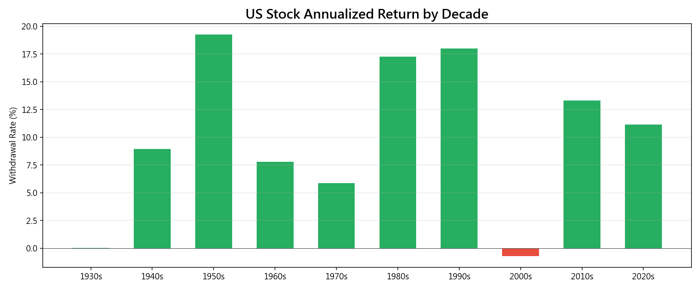
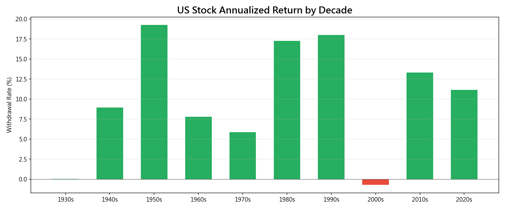
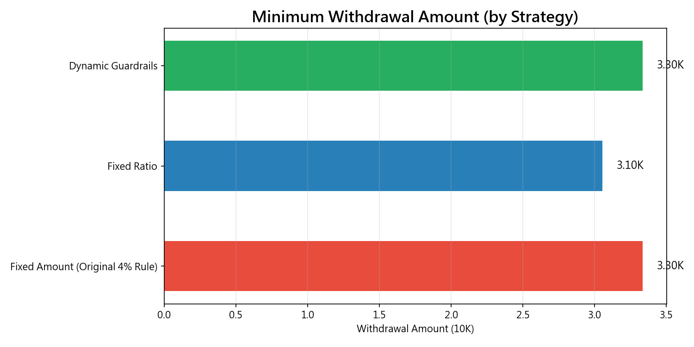
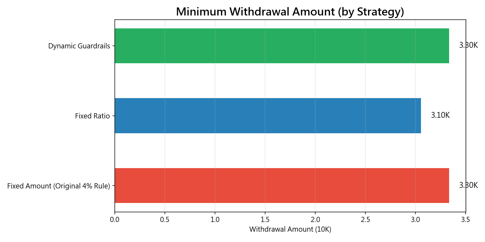

附錄Appendix
本附錄收錄主報告中未詳細展示的補充圖表與數據分析。每張圖表均附有說明，幫助讀者理解其分析目的與閱讀方式。
This appendix contains supplementary charts and analyses not shown in detail in the main report. Each chart includes an explanation of its analytical purpose and how to interpret it.
A.1 期末餘額分布A.1 Terminal Wealth Distribution
本圖呈現不同投資組合在 4% 提領率下，30 年後的期末餘額分布。柱狀圖高度代表中位數終值，誤差線代表 5th-95th 百分位範圍。終值越高、越穩定，代表該投資組合在提領情境下表現越好。
閱讀方式：比較不同投資組合的柱狀圖高度（中位數終值），以及誤差線的寬度（不確定性範圍）。理想的退休投資組合應同時具備較高的中位數終值和較窄的不確定性範圍。
關鍵觀察：60/40 配置的中位數終值雖然低於 100% 股票，但其誤差線範圍更窄（不確定性較小），反映了債券配置帶來的穩定效果。在退休提領的情境下，穩定性比最高報酬更重要。
This chart shows terminal wealth distribution after 30 years at 4% withdrawal rate. Bar height is the median terminal value; error bars show the 5th-95th percentile range. Higher and more stable terminal values indicate better withdrawal performance.
How to read: Compare bar heights (median terminal) and error bar widths (uncertainty). An ideal retirement portfolio has both high median terminal value and narrow uncertainty range.
Key observation: 60/40 has lower median terminal than 100% stock, but narrower error bars (less uncertainty), reflecting the stabilizing effect of bonds. In withdrawal scenarios, stability matters more than maximum returns.
A.2 美國股市各年代報酬分析A.2 US Stock Market Returns by Decade
本圖將美國股市的歷史分解為各個 10 年期間，呈現每個年代的年化報酬率。這幫助我們理解 4% 法則成敗的「年代背景」——在哪些年代退休最有利、哪些最危險。
關鍵觀察：
- 1930 年代（大蕭條）和 2000 年代（網路泡沫 + 金融危機）是唯二年化報酬接近零或為負的年代，在這些時期退休的人面臨最高的破產風險。
- 1950 年代和 1990 年代是報酬最高的年代（均超過 17%/年），在這些時期退休的人即使提領 5-6% 也安然無恙。
- 年代間的報酬差異極大——這正是序列風險的根源。退休時機的「運氣」對結果的影響，可能比投資策略的選擇更大。
This chart decomposes US stock market history into decade-long periods, showing annualized returns for each. This helps contextualize which eras favored and threatened retirees.
Key observations:
- The 1930s (Great Depression) and 2000s (dot-com + GFC) are the only decades with near-zero or negative annualized returns — retirees in these periods faced the highest ruin risk.
- The 1950s and 1990s had the highest returns (both >17%/yr) — retirees in these periods survived even at 5-6% withdrawal.
- The enormous inter-decade variation is the root of sequence risk. The "luck" of retirement timing may matter more than investment strategy choice.
 

A.3 最低提領金額比較A.3 Minimum Withdrawal Amount Comparison
本圖比較三種提領策略在 30 年模擬中可能出現的最低月提領金額。這是衡量「退休生活品質下限」的重要指標——即使沒有破產，但如果提領金額低到無法維持基本生活，也算不上成功的退休。
閱讀方式：柱狀圖越長，代表該策略在最差情境下提供的最低月收入越高。理想的策略應該有較高的「消費地板」（spending floor）。
關鍵觀察：固定金額和 Guardrails 的最低月提領金額相近（約 33,341 元），因為 Guardrails 的下限設為基準的 80%，不會無限下降。固定比例策略的最低月提領則可能降至 30,532 元，顯示其「永不歸零」的保證是以生活品質為代價。
This chart compares the minimum monthly withdrawal amounts encountered during 30-year simulations. This is a crucial "quality of life floor" metric — even without going bankrupt, if withdrawals drop below basic living needs, retirement is not successful.
How to read: Longer bars mean higher minimum monthly income in worst-case scenarios. An ideal strategy should have a high "spending floor."
Key observation: Fixed amount and Guardrails have similar minimums (~NTD 33,341), since Guardrails floor is 80% of base — it does not drop indefinitely. Fixed ratio can drop to NTD 30,532/month, showing that its "never-zero" guarantee comes at the cost of living standards.
 

A.4 Bootstrap 存活率補充圖表A.4 Supplementary Bootstrap Survival Charts
下方圖表提供 Bootstrap 存活率分析的補充視角。折線圖呈現各投資組合在不同提領率下的存活率曲線，熱力圖則以色彩矩陣方式呈現相同數據，方便快速識別安全區間。
The charts below provide supplementary perspectives on bootstrap survival analysis. The line chart shows survival curves by portfolio and rate, while the heatmap presents the same data as a color matrix for quick safe-zone identification.
上圖：Bootstrap 存活率曲線。與歷史路徑圖（圖 01）相比，Bootstrap 曲線更平滑（10,000 次模擬 vs 68 條歷史路徑提供更多數據點）。注意在高提領率（>5%）時，60/40 與 100% 股票的存活率差距拉大，顯示債券在極端情境下的保護效果更為明顯。
Above: Bootstrap survival curves. Compared to historical paths (Fig 01), bootstrap curves are smoother (10,000 simulations vs 68 historical paths provide more data points). Note that at high withdrawal rates (>5%), the gap between 60/40 and 100% stock widens, showing that bonds provide more pronounced protection in extreme scenarios.
A.5 數據來源與致謝A.5 Data Sources & Acknowledgments
美國數據：Robert Shiller CAPE Dataset (http://www.econ.yale.edu/~shiller/data.htm)。此數據集由耶魯大學 Robert Shiller 教授編纂維護，涵蓋 1871 年至今的美國股票月報酬（S&P Composite Index）、10 年期公債報酬、以及消費者物價指數（CPI），是學術研究中最常引用的長期金融數據來源。
台灣數據：本地 MySQL 資料庫（data/reference/），包含 0050（2003-2025）、0056（2007-2025）的調整收盤價及配息數據。台灣 CPI 來自行政院主計總處。
參考文獻：Bengen (1994), Cooley, Hubbard & Walz (1998, 2011), Pfau (2012), Estrada (2017), Guyton & Klinger (2006), Morningstar (2022, 2023)。
US Data: Robert Shiller CAPE Dataset (http://www.econ.yale.edu/~shiller/data.htm). Compiled by Professor Shiller at Yale, covering monthly US stock returns (S&P Composite Index), 10-year government bond returns, and CPI from 1871 to present.
Taiwan Data: Local MySQL database (data/reference/), containing 0050 (2003-2025) and 0056 (2007-2025) adjusted close prices and dividend data. Taiwan CPI from the Directorate-General of Budget, Accounting and Statistics (DGBAS).
References: Bengen (1994), Cooley, Hubbard & Walz (1998, 2011), Pfau (2012), Estrada (2017), Guyton & Klinger (2006), Morningstar (2022, 2023).